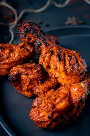
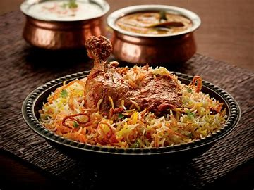
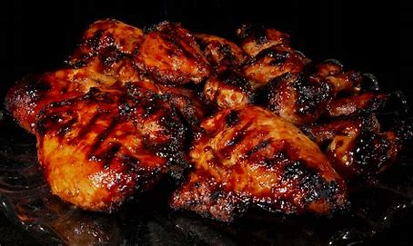
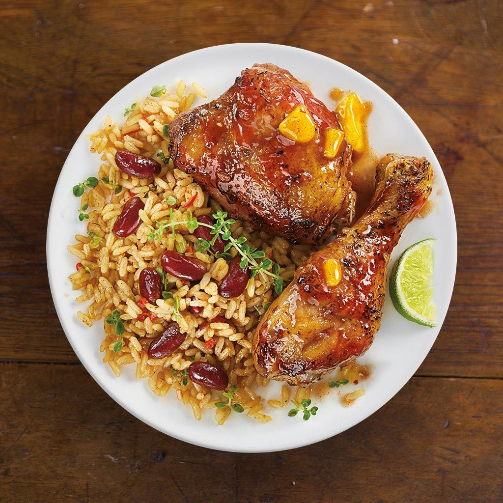

Fried Chicken
fried chicken, is a dish consisting
of chicken pieces that have been
coated with seasoned flour or batter
and pan-fried,deep fried, pressure
fried,or air fried.

Chicken Biryani
Biryani is one of the most amazing
royal delicacies introduced to Indians
by the Persians. Since then it has been
much popular and is considered to be a
luxurious treat to enjoy on special
occasions.
Kerala Porotta
A Parotta/Kerala porotta/Malabar
porotta is a layered flatbread,
originating from the Indian
subcontinent, made from maida flour,
popular in Southern India. It is
originated in Kerala and especially
in the Malabar region of Kerala.

Chicken Alfam
The chicken is placed in between
the grill and pressed and that's what
makes it Alfaham , and it tastes better
compared to a grill chicken because
the meat is more tender in this than
the latter! Actual name is ‘dejaj ala
alfahm' meaning chicken on charcoal.

Alfam Mandi
Al faham is the Arabian style BBQ,
most notably the Al faham chicken is
very popular. So Chicken AlFaham
Mandi, essentially replaces the traditional
chicken preparation, with the deliciousness
of Grilled Chicken and it proves to be a
delicious combination.
Chicken Noodle
Noodles are a type of food made
from unleavened dough which is either
rolled flat and cut, stretched, or
extruded, into long strips or strings.
Noodles are a staple food in many cultures
{kind=link}